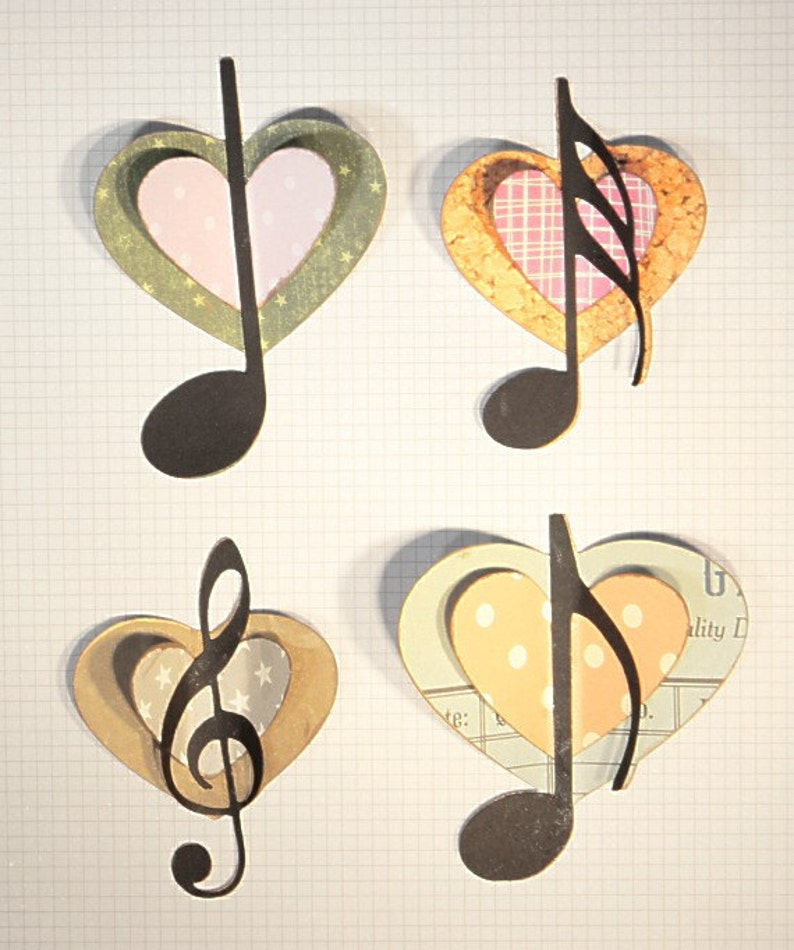
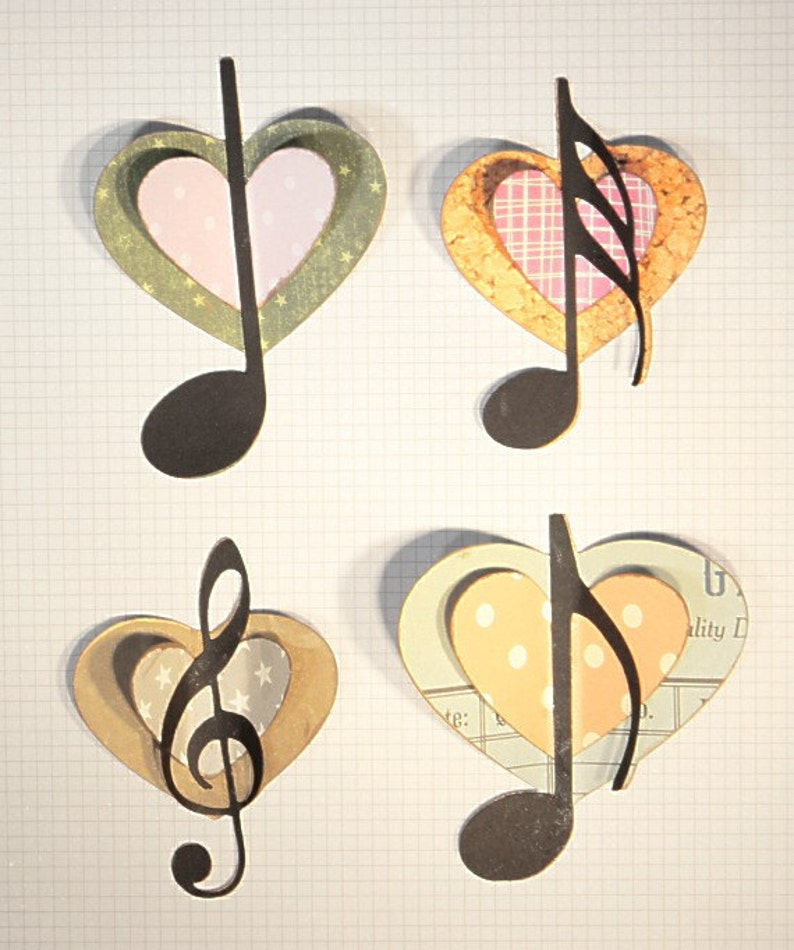

Por otra parte, aun cuando todavía se permanezca en el círculo de las Artes, la música se establece como
una de las Bellas Artes, constituyéndose como un lenguaje sonoro, en el cual cada nota, sonido o escala
busca traducir en ondas sonoras sentimientos humanos o visiones estéticas de un elemento.
Como todo
lenguaje, la música también cuenta con su propio código, y aun cuando éste es universal para todo
músico, al igual que el poeta, cada artista de la música crea en sus composiciones pequeños universos
cerrados, en donde funcionan de forma directa las imágenes y símbolos, sólo que en vez de palabras se
usan sonidos.
 

La música es un complejo sistema de sonidos, melodías y ritmos que el hombre ha ido descubriendo y elaborando para obtener una infinidad de posibilidades diferentes.
| pop | cuarteto | lentos |
|---|---|---|
| selena gomez | rodrigo | ricardo arjona |
| maddonna | la mona | chayanne |
Pop
musica pop Este artículo trata sobre un género musical específico. Para la música popular en general, véase Música popular. Para otros usos, véase Música pop (desambiguación). "Canción pop" redirige aquí. Para otros usos, consulte Canción pop
Cuarteto
musica cuarteto El cuarteto característico, o simplemente cuarteto, es un género de música popular oriundo de la ciudad de Córdoba (Argentina). Se caracteriza por un ritmo alegre y activo. En sus comienzos, en los años 1940, fue asociado casi exclusivamente a la clase baja y a los sectores marginales, siendo despreciado por las clases media y alta. Sin embargo, en los años 1990 el cuarteto logró una mayor difusión en el resto del país.
Lentos
musica lenta La canción, la romanza y la danza son formas musicales populares. De factura más elevada y más artística son: la melodía, escrita por los maestros de la música, y la danza, ejecutada en el teatro con el nombre de ballets, intermedios o divertimientos.
| pop | cuarteto | lentos |
|---|---|---|
| selena gomez | rodrigo | ricardo arjona |
| sin banderas | la mona | maddonna |
Canción popular
La canción popular o canción moderna es el tipo de canción más escuchada en el mundo actual, y es
transmitida a través de grabaciones y medios de comunicación a grandes audiencias por todo el mundo. Tomó
forma en las ciudades europeas y americanas en los siglos XIX y XX.
| charly garcia | fito paez |
| soda estereo | airbag |
| indio solari | oreja de van go |
Facebook: Musilandia
Mail: musilandia@hotmail.com
Tel: 0351-647812381
Nos encontramos en: Nueva Cordoba 4100